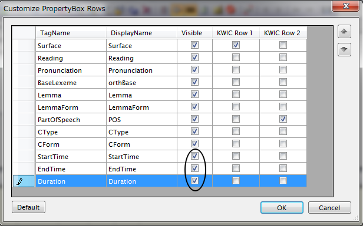
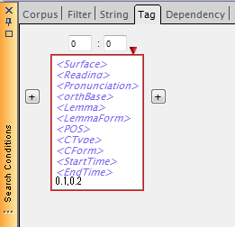
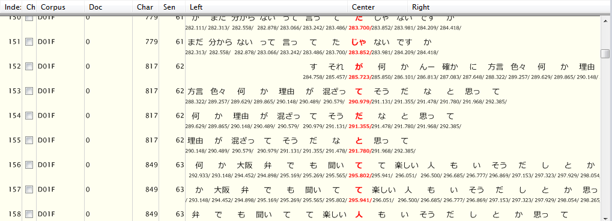

時間情報を用いてTag検索・Dep検索を行う
時間情報を埋め込んだコーパスを用いて、Tag検索・Dependency検索ができます。
検索のための準備設定として、ChaKiのメニューから、"Options" - "Customize PropertyBox Rows" を選択し、下記のダイアログを表示します。

"StartTime", "EndTime", "Duration" の行について、"Visible"列にチェックを入れてください。 これにより、Wordテーブル内の時間情報カラムが検索条件として使用できるようになります。
また、その右の"Kwic Row 2"について、これらのいずれかを選択すると、KWIC結果表示ビュー内で、語の時間属性を表示させることができます。
この準備を行った後、通常のTag SearchまたはDependency Searchのタブにて、時間条件を入力します。 現在はこれらのカラムへの条件指定方法として、"min, max"の形でカンマで下限値、上限値を指定する形のみをサポートしています。

上図では、0.1 ≦ duration ≦ 0.2 という条件でTag Searchを行っています。Dependency Searchの場合も同様です。
検索結果は例えば下のように表示されます。

KWIC Rowの設定によて、各語の下に時間情報が表示されています。見やすくするため、"/" 文字が時間情報の間に入ります。また、このKWIC画面では小数点以下3桁までを表示していますが、検索条件内では、doubleの精度に応じた桁数を用いることができます。